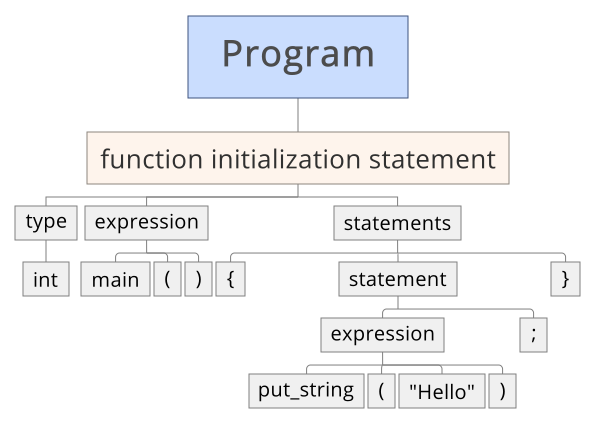

Hello World
In our first chapter Hello World, grammatical concepts in C, like statements, expressions and tokens, will be introduced.
The following table is about analogy between C grammar and English grammar.
| C | English |
|---|---|
| statement | sentence |
| expression | phrase |
| token | word |
Much of the text in quotation block like this one in this C tutorial is about giving examples. You needn't know how the analysis is made the first time you read this tutorial. Systematic explanation will always be introduced in following sections.
In the sample code below,
put_stringis a function variable token, and"Hello"is a string literal token.Something like
f(x)orx+yis an expression. In this case,put_stringisfand"Hello"isx. Hence,put_string("Hello")is an expression.An expression plus a semicolon
;is an expression statement. Theput_string("Hello");statement is executed, andHellois then put on screen.
// this program puts string `Hello` to the screen
#include <litan.h>
int main() {
// this statement is executed
put_string("Hello");
// this statement is executed after
pause();
return 0;
}Grammar of Tree Form
C source code is organized with statements, expressions, tokens and finally characters in a tree form.
The tree form of the source code above.

Comment line or preprocess line is not a part of the C programming language.
C program executes statement one after another.
// comment line start with `//` and will not be executed
// comment are used to help human to read source code
// comment does not influence how a program runs
// preprocess line is something like `#include <file_name>`
// these means including(copying) everything from file `litan.h` to this line
// `litan.h` is a file that contains C source code written by Litan.
#include <litan.h>
// leave this line untouched before chapter-2
int main() {
// your statements can be written here
// leave `return 0;` and `}` untouched before chapter-2
return 0;
}